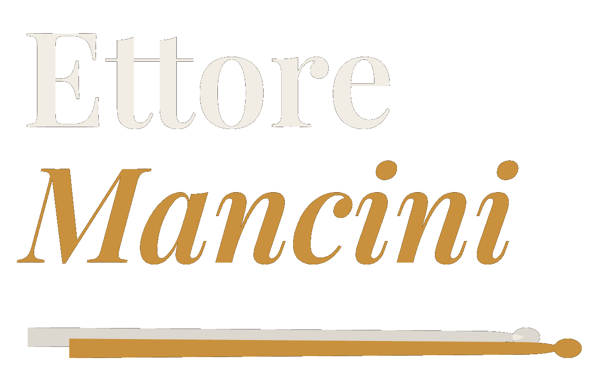
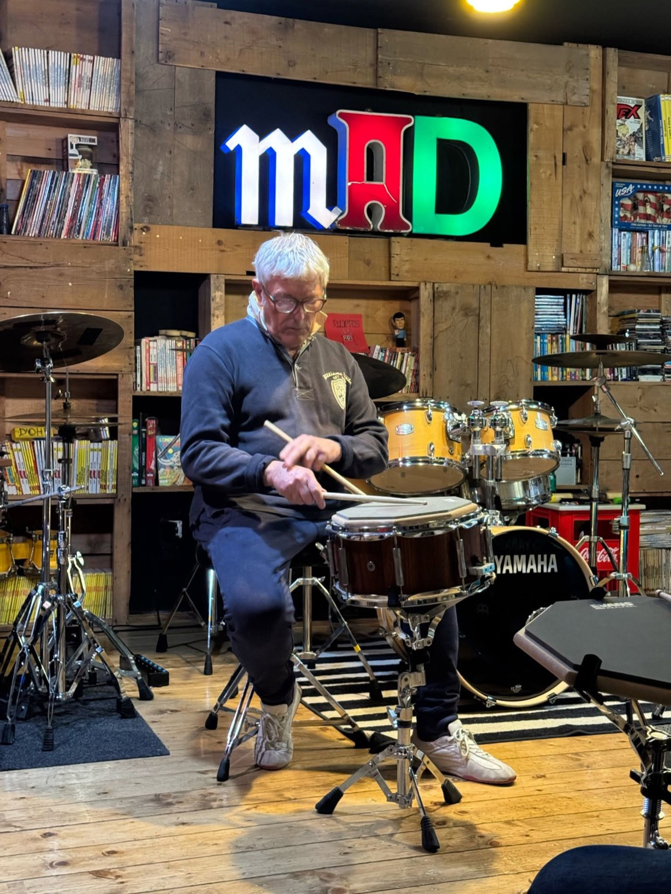
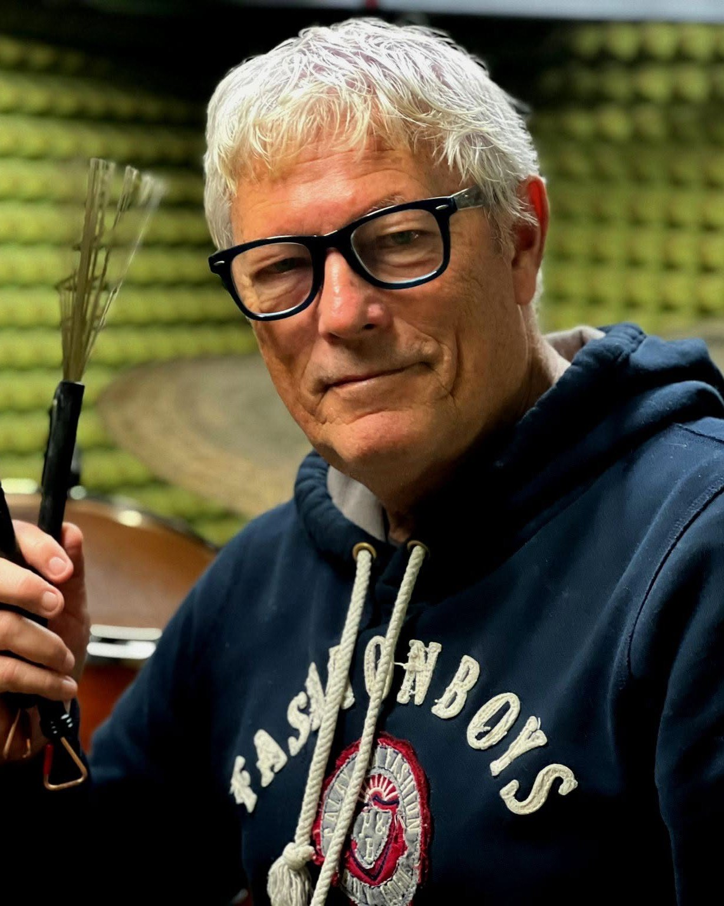
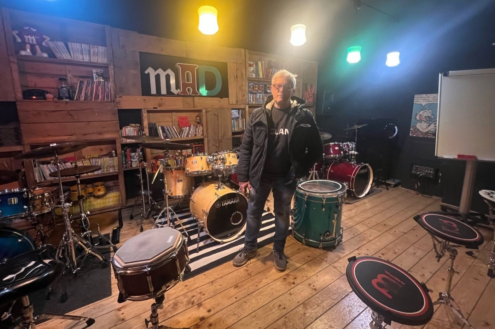
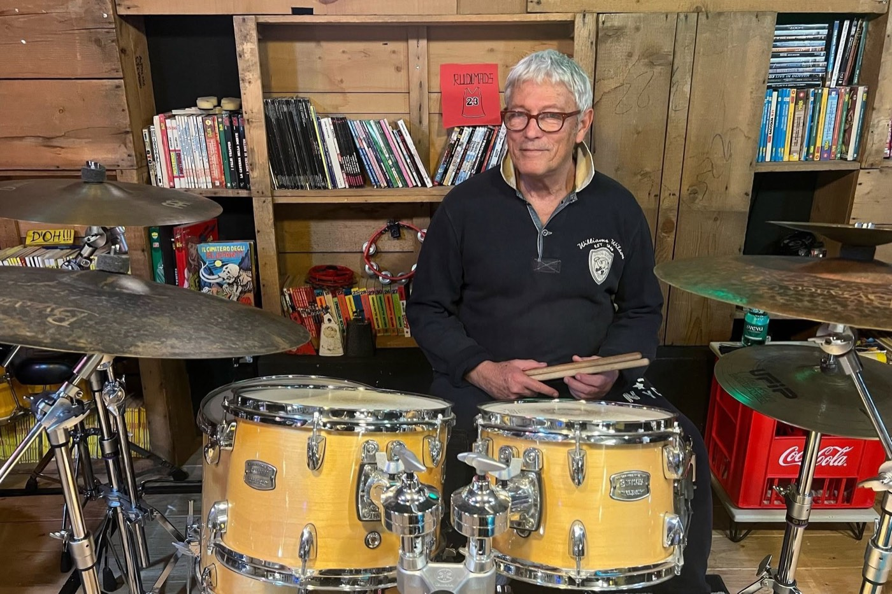
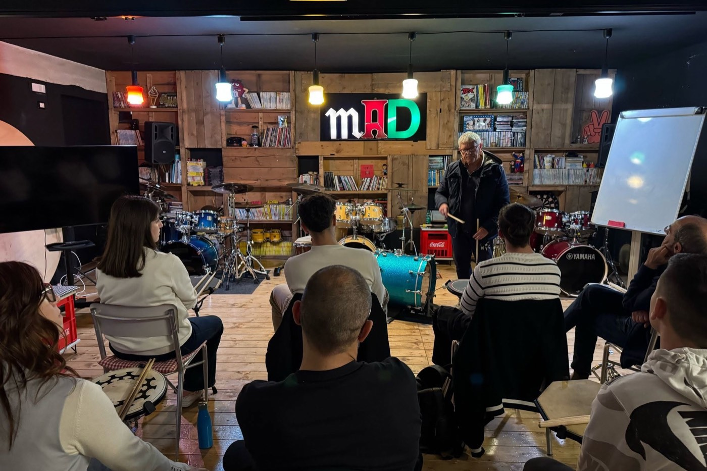
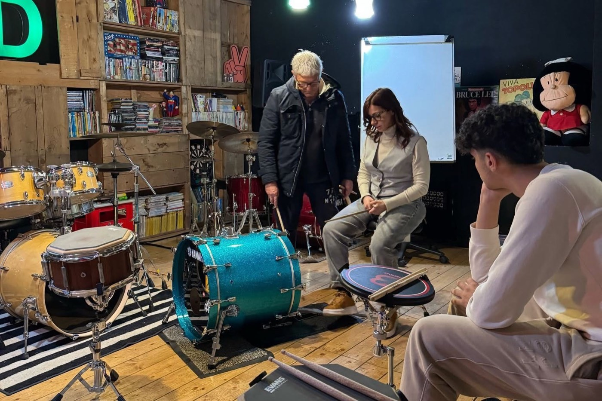
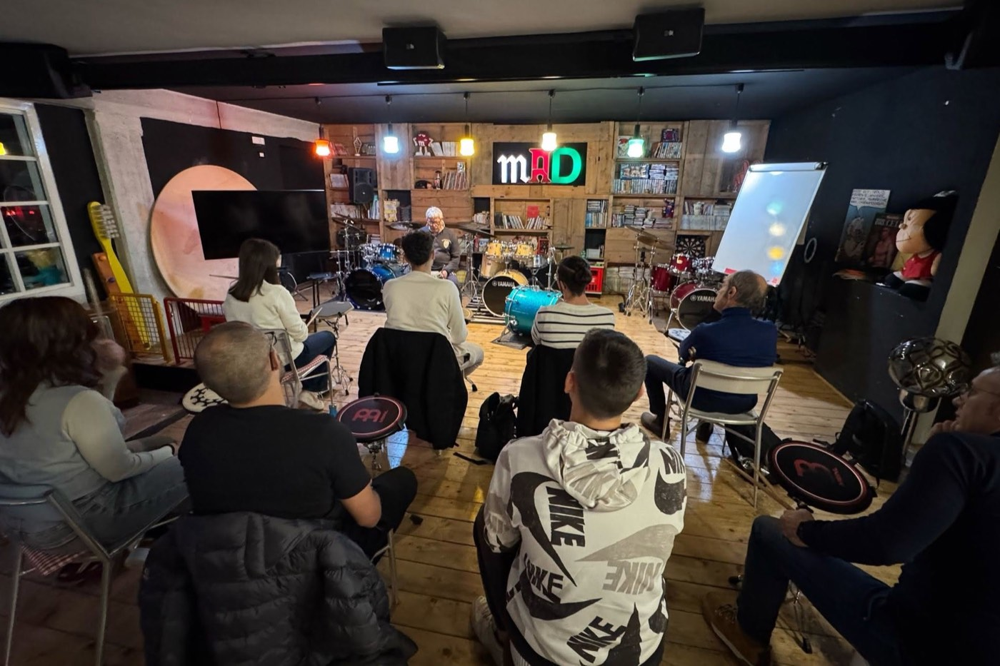
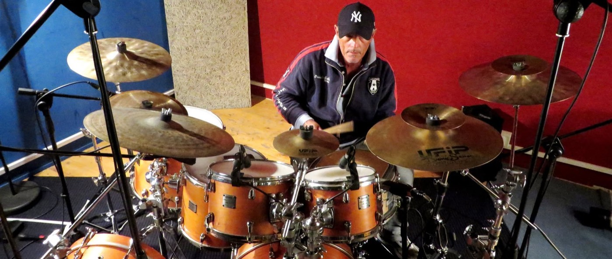

<title>Ettore Mancini — Maestro di batteria</title>
<style>
  :root { color-scheme: dark; }

  /* ============ TOKENS ============ */
  :root {
    --ground:    #0A0908;
    --raised:    #141211;
    --ink:       #F0EAE1;
    --muted:     #9A9088;
    --line:      rgba(240, 234, 225, 0.13);
    --line-firm: rgba(240, 234, 225, 0.28);
    --bronze:    #C79049;
    --patina:    #5B8C82;
    --shadow:    rgba(0, 0, 0, 0.65);
    --veil:      rgba(10, 9, 8, 0.55);

    --display: "Bodoni 72", Didot, "Playfair Display", Georgia, serif;
    --body: -apple-system, BlinkMacSystemFont, "Segoe UI", system-ui, sans-serif;
    --mono: ui-monospace, "SF Mono", Menlo, "Cascadia Mono", Consolas, monospace;

    --gut: clamp(1.25rem, 5vw, 4rem);
    --max: 1180px;
    --header-h: 4.5rem;
  }


  /* ============ BASE ============ */
  *, *::before, *::after { box-sizing: border-box; }

  body {
    margin: 0;
    background: var(--ground);
    color: var(--ink);
    font-family: var(--body);
    font-size: 17px;
    line-height: 1.65;
    -webkit-font-smoothing: antialiased;
    overflow-x: hidden;
  }

  h1, h2, h3 { font-family: var(--display); font-weight: 400; text-wrap: balance; margin: 0; }
  p { margin: 0; }
  a { color: inherit; }

  :focus-visible {
    outline: 2px solid var(--bronze);
    outline-offset: 3px;
  }

  .wrap {
    max-width: var(--max);
    margin-inline: auto;
    padding-inline: var(--gut);
  }

  /* eyebrow: the technical voice of the page — tempo marks, section labels */
  .eyebrow {
    font-family: var(--mono);
    font-size: 0.7rem;
    letter-spacing: 0.22em;
    text-transform: uppercase;
    color: var(--muted);
  }

  /* placeholder marker for anything the client must supply */
  .tbd {
    color: var(--bronze);
    border-bottom: 1px dotted currentColor;
    font-style: normal;
    white-space: nowrap;
  }

  /* ============ SITE HEADER (the top navigation) ============ */
  .site-header {
    position: sticky;
    top: 0;
    z-index: 50;
    background: rgba(10, 9, 8, 0.72);
    backdrop-filter: blur(14px) saturate(1.1);
    -webkit-backdrop-filter: blur(14px) saturate(1.1);
    border-bottom: 1px solid var(--line);
  }

  .header-inner {
    display: flex;
    align-items: center;
    justify-content: space-between;
    gap: 1.5rem;
    min-height: var(--header-h);
    padding-block: 0.6rem;
  }

  /* the wordmark keeps the musical identity the old rail carried */
  .brand {
    display: inline-flex;
    align-items: baseline;
    gap: 0.5rem;
    text-decoration: none;
    white-space: nowrap;
  }
  .brand-name {
    font-family: var(--display);
    font-size: 1.2rem;
    letter-spacing: 0.01em;
    color: var(--ink);
  }
  .brand-note { color: var(--bronze); font-size: 1rem; line-height: 1; }

  .site-nav { display: flex; align-items: center; }

  .nav-list {
    display: flex;
    align-items: center;
    gap: 1.75rem;
    margin: 0;
    padding: 0;
    list-style: none;
  }

  .nav-list a {
    position: relative;
    font-family: var(--mono);
    font-size: 0.72rem;
    letter-spacing: 0.16em;
    text-transform: uppercase;
    color: var(--muted);
    text-decoration: none;
    transition: color 0.25s ease;
  }
  .nav-list a:hover { color: var(--ink); }

  .nav-list a.is-current:not(.nav-cta) { color: var(--ink); }
  .nav-list a.is-current:not(.nav-cta)::after {
    content: "";
    position: absolute;
    left: 0; right: 0; bottom: -0.45rem;
    height: 1px;
    background: var(--bronze);
  }

  .nav-cta {
    padding: 0.55rem 1.15rem;
    border: 1px solid var(--bronze);
    color: var(--bronze) !important;
    transition: background 0.3s ease, color 0.3s ease;
  }
  .nav-cta:hover { background: var(--bronze); color: var(--ground) !important; }

  /* hamburger — hidden until the row no longer fits */
  .nav-toggle {
    display: none;
    align-items: center;
    gap: 0.6rem;
    background: transparent;
    border: 1px solid var(--line-firm);
    color: var(--ink);
    padding: 0.5rem 0.85rem;
    font-family: var(--mono);
    font-size: 0.7rem;
    letter-spacing: 0.16em;
    text-transform: uppercase;
    cursor: pointer;
  }
  .nav-toggle .bars,
  .nav-toggle .bars::before,
  .nav-toggle .bars::after {
    content: "";
    display: block;
    width: 18px;
    height: 2px;
    background: currentColor;
  }
  .nav-toggle .bars { position: relative; }
  .nav-toggle .bars::before { position: absolute; left: 0; top: -6px; }
  .nav-toggle .bars::after { position: absolute; left: 0; top: 6px; }

  @media (max-width: 820px) {
    .site-nav { position: static; }
    .nav-toggle { display: inline-flex; }

    .nav-list {
      position: absolute;
      left: 0; right: 0; top: 100%;
      flex-direction: column;
      align-items: stretch;
      gap: 0;
      background: var(--ground);
      border-bottom: 1px solid var(--line);
      padding: 0.25rem var(--gut) 1.25rem;
      display: none;
    }
    .site-nav[data-open="true"] .nav-list { display: flex; }

    .nav-list a {
      display: block;
      padding-block: 0.95rem;
      border-bottom: 1px solid var(--line);
      font-size: 0.8rem;
    }
    .nav-list a.is-current:not(.nav-cta)::after { display: none; }

    .nav-cta {
      margin-top: 1rem;
      border-bottom: 1px solid var(--bronze);
      text-align: center;
    }
  }


  /* ============ PHOTOGRAPHY ============ */
  /* one treatment for every shot: the photos arrive from different rooms and
     different phones, the veil and the desaturation make them one set */
  .shot {
    position: relative;
    margin: 0;
    overflow: hidden;
    background: var(--raised);
    border: 1px solid var(--line);
  }

  .shot img {
    display: block;
    width: 100%;
    height: 100%;
    object-fit: cover;
    filter: saturate(0.78) contrast(1.07);
    transition: filter 0.7s ease, transform 0.9s ease;
  }

  .shot::after {
    content: "";
    position: absolute;
    inset: 0;
    background: radial-gradient(ellipse at 50% 35%, transparent 30%, var(--veil) 100%);
    pointer-events: none;
    transition: opacity 0.7s ease;
  }

  .shot:hover img { filter: none; transform: scale(1.025); }
  .shot:hover::after { opacity: 0.35; }

  .shot-tall { aspect-ratio: 4 / 5; }
  .shot-wide { aspect-ratio: 3 / 2; }

  .shot-cap {
    position: absolute;
    left: 0; right: 0; bottom: 0;
    padding: 0.9rem 1rem;
    font-family: var(--mono);
    font-size: 0.62rem;
    letter-spacing: 0.16em;
    text-transform: uppercase;
    color: #F0EAE1;
    background: linear-gradient(to top, rgba(10, 9, 8, 0.75), transparent);
    z-index: 2;
  }

  @media (prefers-reduced-motion: reduce) {
    .shot img { transition: none; }
    .shot:hover img { transform: none; }
  }

  /* ============ HERO ============ */
  .hero {
    min-height: 92vh;
    display: grid;
    grid-template-columns: minmax(0, 1.15fr) minmax(0, 0.85fr);
    gap: clamp(2rem, 6vw, 4.5rem);
    align-items: center;
    padding-block: 6rem 4rem;
    position: relative;
  }

  .hero-text {
    display: flex;
    flex-direction: column;
    gap: 2.25rem;
  }

  .hero-shot {
    aspect-ratio: 3 / 4;
    align-self: stretch;
    max-height: 74vh;
  }

  @media (max-width: 900px) {
    .hero {
      grid-template-columns: 1fr;
      min-height: auto;
      padding-block: 5rem 3rem;
    }
    .hero-shot { max-height: none; aspect-ratio: 4 / 3; }
  }

  /* the wordmark carries the name: same Bodoni, same bronze, plus the sticks */
  .hero-logo { margin: 0; }
  .hero-logo img {
    display: block;
    width: 100%;
    max-width: 30rem;
    height: auto;
  }

  .hero-lede {
    max-width: 34ch;
    font-size: clamp(1.05rem, 2.2vw, 1.35rem);
    line-height: 1.55;
    color: var(--muted);
  }

  .hero-foot {
    display: flex;
    flex-wrap: wrap;
    align-items: center;
    gap: 1.5rem 2.5rem;
  }

  .btn {
    display: inline-flex;
    align-items: center;
    gap: 0.6rem;
    padding: 0.85rem 1.6rem;
    border: 1px solid var(--bronze);
    color: var(--bronze);
    text-decoration: none;
    font-family: var(--mono);
    font-size: 0.75rem;
    letter-spacing: 0.16em;
    text-transform: uppercase;
    transition: background 0.3s, color 0.3s;
  }
  .btn:hover { background: var(--bronze); color: var(--ground); }

  .btn-quiet {
    border-color: var(--line-firm);
    color: var(--muted);
  }
  .btn-quiet:hover { background: transparent; border-color: var(--ink); color: var(--ink); }

  /* four beats, accent on one — the page keeps time by itself */
  .pulse {
    display: flex;
    align-items: flex-end;
    gap: 0.55rem;
    height: 1.5rem;
  }

  .pulse span {
    width: 3px;
    height: 0.7rem;
    background: var(--line-firm);
    transform-origin: bottom;
    animation: beat 2.857s steps(1, end) infinite;
  }
  .pulse span:nth-child(1) { background: var(--bronze); animation-delay: 0s; }
  .pulse span:nth-child(2) { animation-delay: 0.714s; }
  .pulse span:nth-child(3) { animation-delay: 1.428s; }
  .pulse span:nth-child(4) { animation-delay: 2.142s; }

  @keyframes beat {
    0%   { transform: scaleY(2.1); opacity: 1; }
    25%  { transform: scaleY(1); opacity: 0.45; }
    100% { transform: scaleY(1); opacity: 0.45; }
  }

  /* ============ SECTION FRAME ============ */
  .band { padding-block: clamp(4.5rem, 10vw, 8rem); border-top: 1px solid var(--line); }
  .band-raised { background: var(--raised); }

  .band-head {
    display: flex;
    align-items: baseline;
    gap: 1.25rem;
    margin-bottom: 3rem;
    flex-wrap: wrap;
  }

  .band-title {
    font-size: clamp(1.9rem, 4.5vw, 3.1rem);
    line-height: 1.05;
    letter-spacing: -0.015em;
  }

  /* ============ THE MAESTRO ============ */
  .maestro {
    display: grid;
    grid-template-columns: minmax(0, 5fr) minmax(0, 7fr);
    gap: clamp(2rem, 5vw, 4.5rem);
    align-items: start;
  }

  .prose {
    display: flex;
    flex-direction: column;
    gap: 1.35rem;
    max-width: 62ch;
  }
  .prose p { color: var(--muted); }
  .prose p.lead {
    color: var(--ink);
    font-family: var(--display);
    font-size: clamp(1.3rem, 3vw, 1.75rem);
    line-height: 1.4;
  }

  @media (max-width: 860px) {
    .maestro { grid-template-columns: 1fr; }
  }

  /* ============ METHOD ============ */
  .method {
    display: grid;
    grid-template-columns: repeat(auto-fit, minmax(230px, 1fr));
    gap: 1px;
    background: var(--line);
    border: 1px solid var(--line);
  }

  .method-item {
    background: var(--ground);
    padding: 2rem 1.6rem;
    display: flex;
    flex-direction: column;
    gap: 0.7rem;
  }
  .band-raised .method-item { background: var(--raised); }

  .method-item h3 {
    font-size: 1.4rem;
    line-height: 1.2;
  }
  .method-item p { color: var(--muted); font-size: 0.95rem; }

  .method-mark {
    font-family: var(--mono);
    font-size: 0.7rem;
    letter-spacing: 0.2em;
    color: var(--patina);
    text-transform: uppercase;
  }

  /* ============ PATHS (a real progression, so it is numbered) ============ */
  .paths { display: flex; flex-direction: column; }

  .path {
    display: grid;
    grid-template-columns: 4.5rem minmax(0, 1fr) auto;
    gap: 1.5rem;
    align-items: baseline;
    padding-block: 1.9rem;
    border-top: 1px solid var(--line);
    transition: padding-left 0.35s ease;
  }
  .path:last-child { border-bottom: 1px solid var(--line); }
  .path:hover { padding-left: 0.9rem; }

  .path-num {
    font-family: var(--display);
    font-size: 1.5rem;
    font-style: italic;
    color: var(--bronze);
  }

  .path-body { display: flex; flex-direction: column; gap: 0.4rem; }
  .path-body h3 { font-size: clamp(1.35rem, 3vw, 1.9rem); }
  .path-body p { color: var(--muted); font-size: 0.95rem; max-width: 58ch; }

  .path-meta {
    font-family: var(--mono);
    font-size: 0.72rem;
    letter-spacing: 0.14em;
    color: var(--muted);
    text-transform: uppercase;
    text-align: right;
  }

  @media (max-width: 720px) {
    .path { grid-template-columns: 2.5rem minmax(0, 1fr); }
    .path-meta { grid-column: 2; text-align: left; }
  }

  /* ============ METRONOME ============ */
  .metro {
    display: grid;
    grid-template-columns: minmax(0, 1fr) minmax(0, 1fr);
    gap: clamp(2rem, 6vw, 5rem);
    align-items: center;
  }
  @media (max-width: 860px) { .metro { grid-template-columns: 1fr; } }

  .metro-box {
    border: 1px solid var(--line);
    background: var(--ground);
    padding: clamp(1.5rem, 4vw, 2.5rem);
    display: flex;
    flex-direction: column;
    gap: 1.75rem;
  }
  .band-raised .metro-box { background: var(--raised); }

  .metro-lights {
    display: flex;
    gap: 0.75rem;
    justify-content: center;
  }

  .light {
    flex: 1;
    max-width: 4.5rem;
    height: 3.2rem;
    border: 1px solid var(--line-firm);
    background: transparent;
    transition: background 0.08s linear, border-color 0.08s linear;
  }
  .light.on { background: var(--patina); border-color: var(--patina); }
  .light.on.accent { background: var(--bronze); border-color: var(--bronze); }

  .metro-readout {
    display: flex;
    align-items: baseline;
    justify-content: center;
    gap: 0.6rem;
    font-family: var(--mono);
    font-variant-numeric: tabular-nums;
  }
  .metro-bpm { font-size: 2.6rem; letter-spacing: -0.02em; }
  .metro-unit { font-size: 0.7rem; letter-spacing: 0.2em; color: var(--muted); }
  .metro-term {
    font-family: var(--display);
    font-style: italic;
    font-size: 1rem;
    color: var(--patina);
    margin-left: 0.4rem;
  }

  .metro-controls { display: flex; flex-direction: column; gap: 1.1rem; }

  input[type="range"] {
    width: 100%;
    accent-color: var(--bronze);
    cursor: pointer;
  }

  .metro-run {
    align-self: center;
    padding: 0.8rem 2.4rem;
    border: 1px solid var(--bronze);
    background: transparent;
    color: var(--bronze);
    font-family: var(--mono);
    font-size: 0.75rem;
    letter-spacing: 0.18em;
    text-transform: uppercase;
    cursor: pointer;
    transition: background 0.3s, color 0.3s;
  }
  .metro-run:hover { background: var(--bronze); color: var(--ground); }
  .metro-run[aria-pressed="true"] { background: var(--bronze); color: var(--ground); }

  /* ============ VOICES ============ */
  .voices {
    display: grid;
    grid-template-columns: repeat(auto-fit, minmax(270px, 1fr));
    gap: clamp(1.5rem, 4vw, 3rem);
  }

  .voice { display: flex; flex-direction: column; gap: 1rem; }

  .voice blockquote {
    margin: 0;
    font-family: var(--display);
    font-size: clamp(1.15rem, 2.4vw, 1.4rem);
    line-height: 1.45;
  }
  .voice blockquote::before { content: "“"; color: var(--bronze); }
  .voice blockquote::after { content: "”"; color: var(--bronze); }

  .voice cite {
    font-family: var(--mono);
    font-size: 0.7rem;
    letter-spacing: 0.16em;
    text-transform: uppercase;
    color: var(--muted);
    font-style: normal;
  }

  /* ============ GALLERY ============ */
  .gallery {
    display: grid;
    grid-template-columns: repeat(auto-fit, minmax(240px, 1fr));
    gap: 1rem;
  }

  /* ============ CONTACT ============ */
  .contact {
    display: grid;
    grid-template-columns: minmax(0, 1fr) minmax(0, 1fr);
    gap: clamp(2rem, 6vw, 4rem);
    align-items: start;
  }
  @media (max-width: 860px) { .contact { grid-template-columns: 1fr; } }

  .lines { display: flex; flex-direction: column; }

  .line-item {
    display: flex;
    justify-content: space-between;
    align-items: baseline;
    gap: 1.5rem;
    padding-block: 1.1rem;
    border-bottom: 1px solid var(--line);
    text-decoration: none;
  }
  .line-item:first-child { border-top: 1px solid var(--line); }
  .line-item .k {
    font-family: var(--mono);
    font-size: 0.7rem;
    letter-spacing: 0.16em;
    text-transform: uppercase;
    color: var(--muted);
  }
  .line-item .v { font-size: 1.05rem; text-align: right; }
  a.line-item:hover .v { color: var(--bronze); }

  /* ============ FOOTER ============ */
  footer {
    border-top: 1px solid var(--line);
    padding-block: 2.5rem;
    display: flex;
    justify-content: space-between;
    gap: 1rem;
    flex-wrap: wrap;
  }

  /* ============ REVEAL ============ */
  .reveal {
    opacity: 0;
    transform: translateY(18px);
    transition: opacity 0.7s ease, transform 0.7s ease;
  }
  .reveal.seen { opacity: 1; transform: none; }

  @media (prefers-reduced-motion: reduce) {
    .reveal { opacity: 1; transform: none; transition: none; }
    .pulse span { animation: none; }
    .path { transition: none; }
    * { scroll-behavior: auto !important; }
  }

  html { scroll-behavior: smooth; scroll-padding-top: calc(var(--header-h) + 0.5rem); }
</style>

<header class="site-header">
  <div class="wrap header-inner">
    <a class="brand" href="#inizio" aria-label="Ettore Mancini — torna all'inizio">
      <span class="brand-name">Ettore Mancini</span>
      <span class="brand-note" aria-hidden="true">♩</span>
    </a>

    <nav class="site-nav" data-open="false" aria-label="Navigazione principale">
      <button class="nav-toggle" type="button" aria-expanded="false"
              aria-controls="nav-list" aria-label="Apri il menu">
        <span class="bars" aria-hidden="true"></span>
        <span>Menu</span>
      </button>

      <ul class="nav-list" id="nav-list">
        <li><a href="#maestro">Il maestro</a></li>
        <li><a href="#metodo">Metodo</a></li>
        <li><a href="#percorsi">Percorsi</a></li>
        <li><a href="#voci">Allievi</a></li>
        <li><a href="#galleria">Studio</a></li>
        <li><a class="nav-cta" href="#contatti">Prenota</a></li>
      </ul>
    </nav>
  </div>
</header>


<main>
  <!-- ============ HERO ============ -->
  <section class="hero wrap" id="inizio">
    <div class="hero-text">
      <p class="eyebrow">Maestro di batteria · <span class="tbd">⟨città⟩</span></p>

      <h1 class="hero-logo">
        
      </h1>

      <div class="pulse" aria-hidden="true"><span></span><span></span><span></span><span></span></div>

      <p class="hero-lede">
        Il tempo non si spiega a parole. Si costruisce, un colpo alla volta, finché non smetti di contarlo.
      </p>

      <div class="hero-foot">
        <a class="btn" href="#contatti">Prenota una lezione</a>
        <a class="btn btn-quiet" href="#metodo">Come si studia</a>
      </div>
    </div>

    <figure class="shot hero-shot">
      
    </figure>
  </section>

  <!-- ============ IL MAESTRO ============ -->
  <section class="band" id="maestro">
    <div class="wrap">
      <div class="band-head reveal">
        <p class="eyebrow">01 — Chi insegna</p>
        <h2 class="band-title">Il maestro</h2>
      </div>

      <div class="maestro">
        <figure class="shot shot-tall reveal">
          
        </figure>

        <div class="prose reveal">
          <p class="lead">
            Insegna batteria da <span class="tbd">⟨anni⟩</span> anni. Prima di essere un metodo, il suo
            lavoro è un orecchio: capire cosa manca a quell'allievo, quel giorno.
          </p>
          <p>
            Diplomato in <span class="tbd">⟨percorso di studi⟩</span>, si è formato tra
            <span class="tbd">⟨scuole e maestri⟩</span> e una lunga attività dal vivo che continua ancora oggi,
            perché il palco resta il posto dove si verifica se una cosa funziona davvero.
          </p>
          <p>
            In studio con lui passano principianti assoluti, ragazzi che preparano l'esame di ammissione al
            conservatorio e professionisti che tornano a sistemare le fondamenta. Il repertorio cambia — jazz,
            rock, funk, studio classico sul tamburo — l'impostazione no.
          </p>
          <p>
            Ha collaborato con <span class="tbd">⟨artisti e progetti⟩</span> e tiene masterclass presso
            <span class="tbd">⟨sedi⟩</span>.
          </p>
        </div>
      </div>
    </div>
  </section>

  <!-- ============ METODO ============ -->
  <section class="band band-raised" id="metodo">
    <div class="wrap">
      <div class="band-head reveal">
        <p class="eyebrow">02 — L'impostazione</p>
        <h2 class="band-title">Quattro cose, in quest'ordine</h2>
      </div>

      <div class="method reveal">
        <div class="method-item">
          <span class="method-mark">Suono</span>
          <h3>Il colpo prima della velocità</h3>
          <p>
            Un colpo che suona pieno a 60 bpm suonerà pieno a 200. Il contrario non è mai successo.
            Si parte da come la bacchetta lascia la pelle.
          </p>
        </div>
        <div class="method-item">
          <span class="method-mark">Tempo</span>
          <h3>Il metronomo si spegne presto</h3>
          <p>
            Serve a tarare l'orecchio, non a sostituirlo. L'obiettivo è portare il tempo dentro,
            dove nessun click può più aiutarti: sul palco, in sala, da solo.
          </p>
        </div>
        <div class="method-item">
          <span class="method-mark">Lettura</span>
          <h3>I rudimenti sono un alfabeto</h3>
          <p>
            Non esercizi da spuntare: sillabe. Quando le hai in mano smetti di imitare i dischi
            e cominci a scrivere le tue frasi.
          </p>
        </div>
        <div class="method-item">
          <span class="method-mark">Musica</span>
          <h3>Si studia suonando</h3>
          <p>
            Ogni cosa imparata finisce subito dentro un brano vero, con altri musicisti quando è possibile.
            La batteria da sola è metà del mestiere.
          </p>
        </div>
      </div>
    </div>
  </section>

  <!-- ============ PERCORSI ============ -->
  <section class="band" id="percorsi">
    <div class="wrap">
      <div class="band-head reveal">
        <p class="eyebrow">03 — Percorsi</p>
        <h2 class="band-title">Da dove parti</h2>
      </div>

      <div class="paths">
        <article class="path reveal">
          <span class="path-num">I</span>
          <div class="path-body">
            <h3>Primi passi</h3>
            <p>
              Per chi non ha mai tenuto due bacchette in mano, dagli <span class="tbd">⟨età minima⟩</span> anni in su.
              Postura, impugnatura, i primi groove: dopo poche settimane si suona già qualcosa di riconoscibile.
            </p>
          </div>
          <span class="path-meta">Settimanale · 45 min</span>
        </article>

        <article class="path reveal">
          <span class="path-num">II</span>
          <div class="path-body">
            <h3>Tecnica e lettura</h3>
            <p>
              Il cuore del lavoro. Rudimenti, indipendenza, lettura ritmica sul pentagramma e trascrizione
              all'ascolto. Il momento in cui uno smette di essere autodidatta.
            </p>
          </div>
          <span class="path-meta">Settimanale · 60 min</span>
        </article>

        <article class="path reveal">
          <span class="path-num">III</span>
          <div class="path-body">
            <h3>Preparazione esami e ammissioni</h3>
            <p>
              Programma costruito sul bando specifico: conservatorio, accademie, certificazioni.
              Si lavora sul repertorio d'esame e sulla tenuta nervosa, che pesa quanto la tecnica.
            </p>
          </div>
          <span class="path-meta">Su calendario</span>
        </article>

        <article class="path reveal">
          <span class="path-num">IV</span>
          <div class="path-body">
            <h3>Perfezionamento e masterclass</h3>
            <p>
              Per batteristi già attivi: suono, dinamica, linguaggio, presenza dal vivo.
              Anche in formato intensivo di gruppo, presso <span class="tbd">⟨sede⟩</span>.
            </p>
          </div>
          <span class="path-meta">Singola o intensivo</span>
        </article>
      </div>
    </div>
  </section>

  <!-- ============ METRONOMO ============ -->
  <section class="band band-raised" id="tempo">
    <div class="wrap">
      <div class="band-head reveal">
        <p class="eyebrow">04 — Il primo strumento</p>
        <h2 class="band-title">Non è la batteria</h2>
      </div>

      <div class="metro">
        <div class="prose reveal">
          <p class="lead">È questo. Alza il volume e prova a restarci dentro per un minuto intero.</p>
          <p>
            La prima lezione, quasi sempre, non si tocca la batteria: si batte il piede.
            Il click accentua il primo movimento di ogni battuta — quello è il punto a cui tornare
            quando ti perdi. Parti da 60, arriva a 120 solo quando i quattro colpi cadono
            esattamente dove li aspetti.
          </p>
        </div>

        <div class="metro-box reveal">
          <div class="metro-lights" aria-hidden="true">
            <div class="light accent" data-beat="0"></div>
            <div class="light" data-beat="1"></div>
            <div class="light" data-beat="2"></div>
            <div class="light" data-beat="3"></div>
          </div>

          <div class="metro-readout">
            <span class="metro-bpm" id="bpm-out">84</span>
            <span class="metro-unit">bpm · 4/4</span>
            <span class="metro-term" id="term-out">Andante</span>
          </div>

          <div class="metro-controls">
            <label class="eyebrow" for="bpm">Tempo</label>
            <input type="range" id="bpm" min="40" max="200" value="84" step="1"
                   aria-label="Battiti al minuto" />
            <button class="metro-run" id="metro-run" type="button" aria-pressed="false">Avvia</button>
          </div>
        </div>
      </div>
    </div>
  </section>

  <!-- ============ VOCI ============ -->
  <section class="band" id="voci">
    <div class="wrap">
      <div class="band-head reveal">
        <p class="eyebrow">05 — Allievi</p>
        <h2 class="band-title">Chi ci è passato</h2>
      </div>

      <div class="voices">
        <div class="voice reveal">
          <blockquote>Suonavo da sei anni e non sapevo perché certe cose non venivano. In tre lezioni me l'ha fatto vedere.</blockquote>
          <cite><span class="tbd">⟨nome allievo⟩</span> — <span class="tbd">⟨qualifica⟩</span></cite>
        </div>
        <div class="voice reveal">
          <blockquote>Mio figlio ha nove anni ed esce da lezione che canta il pattern per strada. Non l'ho mai dovuto obbligare a studiare.</blockquote>
          <cite><span class="tbd">⟨nome genitore⟩</span> — <span class="tbd">⟨città⟩</span></cite>
        </div>
        <div class="voice reveal">
          <blockquote>Preparava me all'ammissione e intanto mi insegnava a stare zitto quando serve. La seconda cosa mi è servita di più.</blockquote>
          <cite><span class="tbd">⟨nome allievo⟩</span> — <span class="tbd">⟨conservatorio⟩</span></cite>
        </div>
      </div>
    </div>
  </section>

  <!-- ============ GALLERIA ============ -->
  <section class="band band-raised" id="galleria">
    <div class="wrap">
      <div class="band-head reveal">
        <p class="eyebrow">06 — Lo studio</p>
        <h2 class="band-title">Dove si lavora</h2>
      </div>

      <div class="gallery reveal">
        <figure class="shot shot-wide">
          
          <figcaption class="shot-cap">La sala</figcaption>
        </figure>
        <figure class="shot shot-wide">
          
          <figcaption class="shot-cap">Il posto di lavoro</figcaption>
        </figure>
        <figure class="shot shot-wide">
          
          <figcaption class="shot-cap">Masterclass</figcaption>
        </figure>
        <figure class="shot shot-wide">
          
          <figcaption class="shot-cap">Lezione di gruppo</figcaption>
        </figure>
        <figure class="shot shot-wide">
          
          <figcaption class="shot-cap">Incontro aperto</figcaption>
        </figure>
        <figure class="shot shot-wide">
          
          <figcaption class="shot-cap">In studio</figcaption>
        </figure>
      </div>
    </div>
  </section>

  <!-- ============ CONTATTI ============ -->
  <section class="band" id="contatti">
    <div class="wrap">
      <div class="band-head reveal">
        <p class="eyebrow">07 — Contatti</p>
        <h2 class="band-title">La prima lezione è una prova</h2>
      </div>

      <div class="contact">
        <div class="prose reveal">
          <p class="lead">Si suona mezz'ora insieme, si capisce da dove partire. Nessun impegno.</p>
          <p>
            Scrivi indicando il tuo livello e cosa vorresti suonare: la risposta arriva
            entro un paio di giorni con le disponibilità.
          </p>
        </div>

        <div class="lines reveal">
          <a class="line-item" href="mailto:info@ettoremancini.it">
            <span class="k">Email</span>
            <span class="v tbd">⟨indirizzo email⟩</span>
          </a>
          <a class="line-item" href="tel:+39">
            <span class="k">Telefono</span>
            <span class="v tbd">⟨numero⟩</span>
          </a>
          <div class="line-item">
            <span class="k">Studio</span>
            <span class="v tbd">⟨via, città⟩</span>
          </div>
          <a class="line-item" href="#galleria">
            <span class="k">Instagram</span>
            <span class="v tbd">⟨@profilo⟩</span>
          </a>
        </div>
      </div>
    </div>
  </section>

  <footer class="wrap">
    <span class="eyebrow">Ettore Mancini · Batteria e percussioni</span>
    <span class="eyebrow"><span class="tbd">⟨P. IVA⟩</span></span>
  </footer>
</main>

<script>

  /* ---- header: mobile toggle + current-section highlight ---- */
  (function () {
    var nav = document.querySelector('.site-nav');
    var toggle = document.querySelector('.nav-toggle');
    if (nav && toggle) {
      var setOpen = function (open) {
        nav.setAttribute('data-open', open ? 'true' : 'false');
        toggle.setAttribute('aria-expanded', open ? 'true' : 'false');
        toggle.setAttribute('aria-label', open ? 'Chiudi il menu' : 'Apri il menu');
      };
      toggle.addEventListener('click', function () {
        setOpen(nav.getAttribute('data-open') !== 'true');
      });
      nav.querySelectorAll('.nav-list a').forEach(function (a) {
        a.addEventListener('click', function () { setOpen(false); });
      });
    }

    var links = Array.prototype.slice.call(document.querySelectorAll('.nav-list a[href^="#"]'));
    var map = {};
    var sections = [];
    links.forEach(function (a) {
      var sec = document.getElementById(a.getAttribute('href').slice(1));
      if (sec) { map[sec.id] = a; sections.push(sec); }
    });
    if (sections.length && 'IntersectionObserver' in window) {
      var spy = new IntersectionObserver(function (entries) {
        entries.forEach(function (e) {
          if (!e.isIntersecting) return;
          links.forEach(function (l) { l.classList.remove('is-current'); });
          if (map[e.target.id]) map[e.target.id].classList.add('is-current');
        });
      }, { rootMargin: '-45% 0px -50% 0px', threshold: 0 });
      sections.forEach(function (s) { spy.observe(s); });
    }
  })();

  /* ---- reveal on scroll ---- */
  (function () {
    var items = document.querySelectorAll('.reveal');
    if (!('IntersectionObserver' in window)) {
      items.forEach(function (el) { el.classList.add('seen'); });
      return;
    }
    var io = new IntersectionObserver(function (entries) {
      entries.forEach(function (e) {
        if (e.isIntersecting) {
          e.target.classList.add('seen');
          io.unobserve(e.target);
        }
      });
    }, { threshold: 0.12, rootMargin: '0px 0px -40px 0px' });
    items.forEach(function (el) { io.observe(el); });
  })();

  /* ---- metronome: scheduled on the audio clock, not on setInterval ---- */
  (function () {
    var slider = document.getElementById('bpm');
    var bpmOut = document.getElementById('bpm-out');
    var termOut = document.getElementById('term-out');
    var runBtn = document.getElementById('metro-run');
    var lights = Array.prototype.slice.call(document.querySelectorAll('.light'));

    var ctx = null, timer = null, running = false;
    var nextNoteTime = 0, beat = 0, queue = [];
    var LOOKAHEAD = 25, SCHEDULE_AHEAD = 0.12;

    function term(bpm) {
      if (bpm < 60) return 'Largo';
      if (bpm < 76) return 'Adagio';
      if (bpm < 108) return 'Andante';
      if (bpm < 120) return 'Moderato';
      if (bpm < 156) return 'Allegro';
      if (bpm < 176) return 'Vivace';
      return 'Presto';
    }

    function sync() {
      var v = parseInt(slider.value, 10);
      bpmOut.textContent = v;
      termOut.textContent = term(v);
    }
    slider.addEventListener('input', sync);
    sync();

    function click(time, accent) {
      var osc = ctx.createOscillator();
      var gain = ctx.createGain();
      osc.frequency.value = accent ? 1600 : 1000;
      gain.gain.setValueAtTime(accent ? 0.5 : 0.28, time);
      gain.gain.exponentialRampToValueAtTime(0.0001, time + 0.045);
      osc.connect(gain).connect(ctx.destination);
      osc.start(time);
      osc.stop(time + 0.05);
    }

    function schedule() {
      while (nextNoteTime < ctx.currentTime + SCHEDULE_AHEAD) {
        click(nextNoteTime, beat === 0);
        queue.push({ beat: beat, time: nextNoteTime });
        nextNoteTime += 60.0 / parseInt(slider.value, 10);
        beat = (beat + 1) % 4;
      }
    }

    function draw() {
      if (!running) return;
      var now = ctx.currentTime;
      while (queue.length && queue[0].time <= now) {
        var hit = queue.shift();
        lights.forEach(function (l, i) { l.classList.toggle('on', i === hit.beat); });
        setTimeout(function () {
          lights.forEach(function (l) { l.classList.remove('on'); });
        }, 90);
      }
      requestAnimationFrame(draw);
    }

    runBtn.addEventListener('click', function () {
      if (running) {
        running = false;
        clearInterval(timer);
        lights.forEach(function (l) { l.classList.remove('on'); });
        runBtn.textContent = 'Avvia';
        runBtn.setAttribute('aria-pressed', 'false');
        return;
      }
      if (!ctx) ctx = new (window.AudioContext || window.webkitAudioContext)();
      if (ctx.state === 'suspended') ctx.resume();
      running = true;
      beat = 0;
      queue = [];
      nextNoteTime = ctx.currentTime + 0.06;
      timer = setInterval(schedule, LOOKAHEAD);
      requestAnimationFrame(draw);
      runBtn.textContent = 'Ferma';
      runBtn.setAttribute('aria-pressed', 'true');
    });
  })();
</script>
